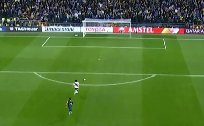

La final de nuestras vidas es un libro a la altura de lo que hubo en juego entre los dos equipos más grandes de la Argentina durante la edición 2018 de la Copa Libertadores de América. Y su autor, un experto en escribir sobre encrucijadas deportivas que marcaron a fuego la historia del fútbol argentino: ya lo había hecho en Ser de River en las buenas y en las malas y en El partido, Argentina-Inglaterra 1986, dos de sus exitosos libros. Con talento, oficio y sentimiento.

¿Qué motivo había para creer, si además Boca había jugado mejor que River en el primer tiempo? ¿Y si al final no se trataba de justicia poética sino de puro excremento futbolístico? ¿Y si todo, hasta los triunfos de 2014, 2015 y la Supercopa en marzo pasado, se había tratado de una broma macabra? ¿Y si nuestro destino estaba definitivamente marcado y quedábamos condenados a cumplir el mito de Sísifo, el hombre que sube una roca por una cuesta empinada hasta que, a punto de llegar a la cima, el propio peso de la roca lo hace caer, y así empieza a subir de nuevo, una y otra vez? Aunque costara, aunque la final del mundo parecía haberse convertido en nuestro fin del mundo, había que aferrarse a los mismos argumentos que nos llevaron hasta el Bernabéu, incluso con dos goles de desventaja faltando 10 minutos en Brasil: el espíritu competitivo de este equipo y un último milagro de Gallardo. Porque así como un periodista de El Gráfico escribió en la década del 30: “Creo en Dios y en Bernabé Ferreyra”, en referencia a nuestro primer gran ídolo popular, yo no creeré en Dios pero sí creo en Marcelo Gallardo.
Andrés Burgo